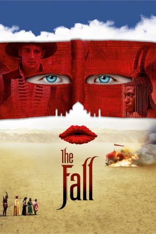

#579 The Fall - Im Reich der Fantasie
Alternativ: The Fall
 
 IMDB-Wertung: 7.9 / 10
IMDB-Wertung: 7.9 / 10  Metascore: 64
Metascore: 64 
Los Angeles, 1915. Der Stuntman Roy Walker liegt nach einem missglückten Stunt im Krankenhaus. Viel schlimmer als die gebrochenen Beine schmerzt ihn jedoch der Verlust seiner großen Liebe, die ihn für einen anderen Mann verlassen hat. Im Krankenhaus trifft Roy auf die kleine Alexandria. Er beginnt, dem Mädchen eine phantastische Geschichte über fünf mythische Helden zu erzählen, die gemeinsam einen Rachefeldzug gegen den korrupten Gouverneur Odious planen. Je weiter er die Geschichte erzählt, desto mehr verschwimmen die Grenzen zwischen Fiktion und Realität. Doch Roy will ihr die Geschichte nicht zu Ende erzählen - es sei denn, Alexandria stiehlt ihm eine tödliche Dosis Morphium aus dem Medizinschrank ...
Jahr: 2006
Dauer: 117 Minuten
FSK: 12
Land: USA Studio: Roadside AttractionsTonspuren: DTS - ,
Untertitel: Deutsch,
Auflösung: 1080p (1920x1040) Größe: 9574 MB
Genre: Abenteuer, Komödie, Drama, Fantasy
Regisseur:  Tarsem Singh
Tarsem Singh
Drehbuch: Dan Gilroy, Nico Soultanakis, Tarsem Singh, Valeri Petrov
Soundtrack: Krishna Levy
Darsteller:
- Justine Waddell als Nurse Evelyn / Sister Evelyn
 Lee Pace als Roy Walker / Masked Bandit
Lee Pace als Roy Walker / Masked Bandit Sean Gilder als Walt Purdy
Sean Gilder als Walt Purdy Grant Swanby als Father Augustine
Grant Swanby als Father Augustine Emil Hostina als Alexandria's Father / Black Bandit
Emil Hostina als Alexandria's Father / Black Bandit- Jeetu Verma als Indian / Orange Picker
 Leo Bill als Darwin / Orderly
Leo Bill als Darwin / Orderly- Marcus Wesley als Otta Benga / Ice Delivery Man
- Julian Bleach als Mystic / Orange Picker
 Daniel Caltagirone als Sinclair / Governor Odious
Daniel Caltagirone als Sinclair / Governor Odious- Catinca Untaru als Alexandria
- Kim Uylenbroek als Doctor / Alexander the Great
- Aiden Lithgow als Alexander's Messenger
- Ronald France als Otto
- Andrew Roussouw als Mr. Sabatini
- Michael Huff als Dr. Whitaker
- Robin Smith als Luigi / One Legged Actor
- Ayesha Verman als Indian's Bride
- Ketut Rina als Chief Mystic
- Camilla Waldman als Crying Woman
- Elvira Deatcu als Alexandria's Mother
- Emma Johnstone als Alexandria's Sister
- Nico Soultanakis als Horace
- Jon Kamen als Morty
- Karen Haacke als Alice
- Emma Maria Landberg als Flicker Film Woman
- Miguel Hernández als Cowboy 1
- Oscar Moreno als Cowboy 2
- David Parra als Cowboy 3
Datei: X:\2006(A-F)\Fall - Im Reich der Fantasie, The (2006, FSK12, 1920x1040).mkv seit 11.03.2015
Festplatte: HD 2005(G-Z)-2006(A-Z)
 Es gibt insgesamt 56 Filme in der Gruppe '2006(A-F)'
Es gibt insgesamt 56 Filme in der Gruppe '2006(A-F)'